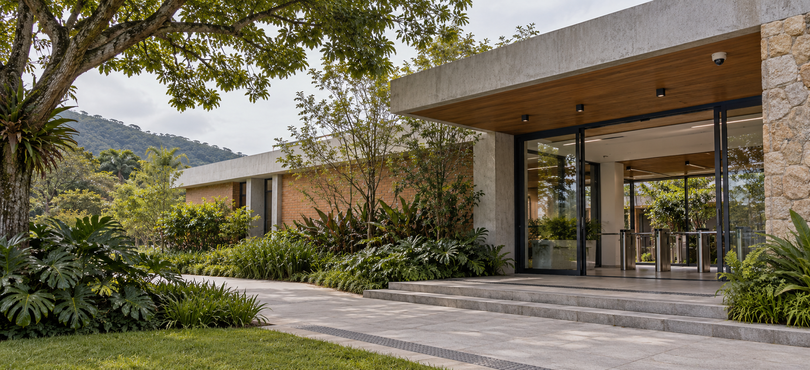
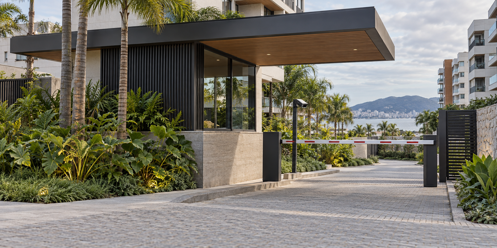

01 / IMAGEM
Videomonitoramento
Câmeras e pontos de visão planejados para entradas, circulação e áreas comuns.
Videomonitoramento, analíticos em nuvem e suporte técnico para sistemas de segurança já instalados — além de projetos para escolas e condomínios em Florianópolis e região.

A escolha dos equipamentos vem depois do levantamento. Primeiro entendemos os fluxos, os acessos e as prioridades de quem usa o espaço.
Câmeras e pontos de visão planejados para entradas, circulação e áreas comuns.
Gestão dos acessos de pedestres, com reconhecimento facial em catracas conforme a necessidade do projeto.
Identificação de veículos para apoiar o controle de entradas e saídas nas áreas de acesso.
Já existe um sistema instalado? A Neo avalia, orienta e presta suporte técnico para ajudar a recuperar e manter os recursos de segurança em funcionamento.
Revisões programadas do sistema existente para identificar falhas e pontos de atenção antes que prejudiquem a operação.
Suporte técnico para sistemas instalados que apresentam falhas, incluindo correções em câmeras sem imagem.
O desenho do sistema considera quem circula, os horários de maior movimento e a estrutura já existente.
Acessos organizados, registro de visitantes e cobertura de pontos importantes da rotina escolar.
Conversar sobre escolas
Videomonitoramento, controle de pedestres e veículos, incluindo leitura de placas nos acessos definidos.
Conversar sobre condomíniosImagens ilustrativas para esta prévia; podem ser substituídas por fotos de projetos reais.
Analíticos em nuvem podem aproveitar sistemas de câmeras já instalados, sem exigir a troca completa. A avaliação confirma a compatibilidade e os recursos disponíveis.
Registro de veículos e apoio à consulta de entradas e saídas em pontos definidos.
Conversar sobre LPR ↗Contagem de circulação em entradas e áreas selecionadas para apoiar a operação.
Avaliar aplicação ↗Identificação de concentração em zonas configuradas, quando compatível com a solução escolhida.
Avaliar aplicação ↗Alertas para movimento, permanência ou entrada em áreas delimitadas e horários configurados.
Planejar zonas ↗A análise é processada em nuvem. A integração pode aproveitar a estrutura existente; conectividade, compatibilidade e funções disponíveis são confirmadas na avaliação técnica.
O planejamento busca apoiar a equipe da escola desde a chegada até o encerramento das atividades. Os pontos de controle e monitoramento são definidos com a gestão, considerando os horários e a circulação de cada comunidade.
Uma conversa objetiva ajuda a entender o espaço antes de montar a proposta. Assim, o escopo e as etapas ficam claros desde o começo.
Conversa com a gestão para mapear prioridades, horários e estrutura existente.
Levantamento dos acessos, pontos de monitoramento e possibilidades de integração.
Solução apresentada com escopo, equipamentos indicados e etapas de implantação.
Implantação planejada e orientação da equipe para utilização do sistema.
Atendimento em Florianópolis e cidades próximas.